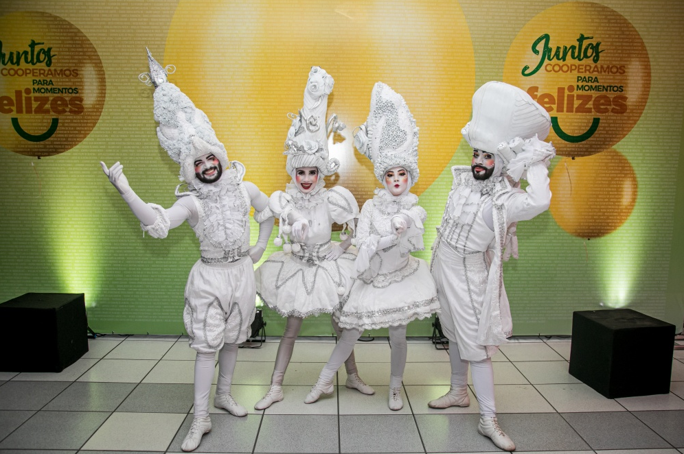

A convenção contou com duas atrações que fortaleceram este momento inédito. O Espaço Sou Arte, que realiza apresentações de arte circense, dança e teatro,
trouxe mais do que entretenimento, promovendo uma reflexão de como podemos aprimorar o ser humano na sua essência.O ano de 2020 começa muito especial
para a Cooper. Pela primeira vez em seus quase 76 anos, na manhã do dia 10 de fevereiro, a cooperativa reuniu cerca de 3 mil colaboradores, no setor 2 do
Parque Vila Germânica, para a realização da sua primeira convenção. O evento foi organizado para apresentar a todos o planejamento estratégico dos próximos
cinco anos, estruturado por uma equipe multidisciplinar, com o apoio de uma consultoria técnica e considerando as respostas de colaboradores e cooperados a
uma pesquisa realizada no ano de 2019.
Ibirama, onde a Feira de Oportunidades teve a realização de sua primeira edição, em 2009, recebeu mais uma vez o evento, desta vez em 2019. 114 expositores,
cooperados puderam divulgar seus empreendimentos nos 3 dias da feira, que reuniu um público de 12.545 pessoas. A programação cultural do evento, que contou com artistas
locais, contagiou a todos. Além das atrações, a Feira de Oportunidades Viacredi Alto Vale disponibilizou uma área de recreação infantil, orientações de saúde e a praça
de alimentação solidária, auxiliando instituições beneficentes da região. A programação do evento contou com a corrida e caminhada: Viacredi Alto Vale em movimento, como
atração especial e superou as expectativas em número de participações. Foram 3 dias de muitas atividades para a comunidade de Ibirama, para os cooperados Viacredi Alto
Vale fortalecendo a economia da região.


A Feira de Oportunidades Acredicoop chegou pela primeira vez na cidade de Joinville, no período de 20 a 22 de setembro de 2019 e já foi marcada pelo
sucesso de público. Foram 14.168 pessoas que prestigiaram os 170 cooperados expositores, além da área de recreação infantil, palestras, espaço com orientações de
saúde, praça de alimentação solidária e atrações culturais. O evento que tem por objetivo a divulgação dos empreendimentos de seus cooperados e movimentar a economia
local, pode auxiliar instituições beneficentes da região e iniciar uma nova rota para a Feira de Oportunidades.